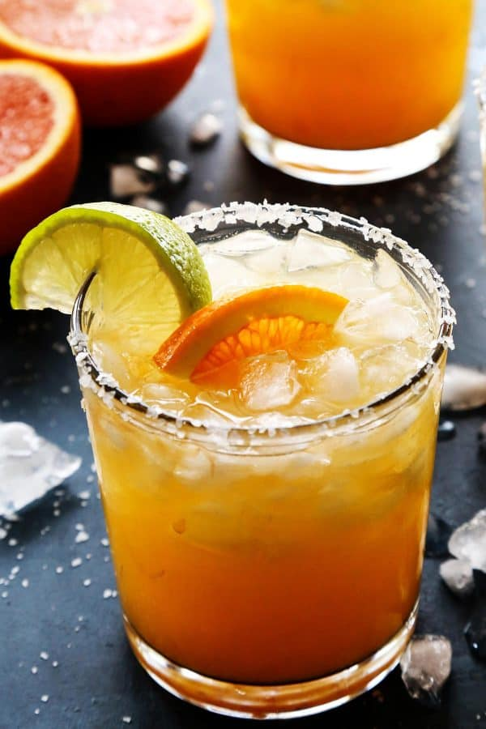

Orange and Lime Margarita's

Orange and Lime Margarita
light, refreshing, not too sweet and destined to be a hit at your next summer BBQ!
Ingredients
- 2 ounces freshly squeezed orange juice
- 1 ounce freshly squeezed lime juice
- 1 ounce tequila
- 1 tablespoon agave syrup
- ice as needed
- orange twist
Steps
- Pour orange juice, lime juice, tequila and agave syrup into a cocktail shaker. Add ice and shake well. Strain into a margarita glass and serve with an organge twist.